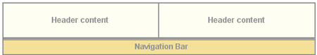
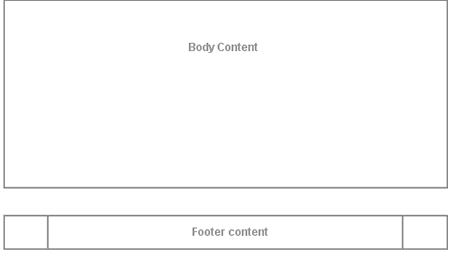
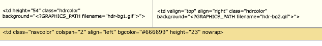

The user interface in the DLXS middleware is manifested by a combination of interrelated techniques:
The first two techniques are of primary importance for specifying the various components of HTML delivery that make up the "look and feel" of the interface.
HTML templates are used to deliver dynamic content from the CGI within a prescribed HTML structure. In general, there are as many templates per class as there are distinct page types in the overall functional architecture of the class. A collection implemented with the TextClass middleware, for example, can include up to 33 template files for delivering, among other pages, multiple search forms, results displays, bibliographic headers and tables of contents, search histories and full text displays. Each HTML template is a combination of static HTML code for areas of content that are unchanging from page to page, and processing instructions that are either replaced by content provided by the CGI or used to remove content or code from the template before delivery. Processing instructions can deliver simple strings, or large combinations of text and HTML code, depending on the circumstance, but the practice has been to minimize the amount of HTML code replaced via a PI because this allows for easier maintenance of graphical interface at the template level. Otherwise, the only rule governing template planning is that, when parsed, it should deliver valid or acceptable HTML to the browser.
HTML templates are combined with processing instruction tags that are parsed and replaced by the middleware. Processing instruction tags are of the form
<?PI_IDENTIFIER_NAME [modifiername="value"]*>
where all identifier names are preceded by a question mark and are represented in all capital letters with underscore characters. Zero or more modifier name/value pairs can be included to provide additional parameters. Here are two example PI tags:
<?TITLE>Appears witin <TITLE></TITLE>tags and supplies a collection title string.<?CSS_PATH filename="textclass-specific.css">Appears within the
hrefattribute of a<LINK>element to return the appropriate contextual path to a collection-specific CSS file, named in the filename modifier
(i.e., /DLXSROOT/c/coll/textclass-specific.css).
Processing instruction tags are not, in all cases, a standardized API mechanism to collection information, though they share some of those characteristics. In general, the PIs are more likened to a customized API to the middleware itself. In this regard, PIs perform two general types of functionality:
PIs may act as simple variable names: As in <?TITLE>
above, replaced by simple strings or even large blocks of HTML code and text;
PIs may act as include/exclude instructions: A pair of PI tags may instruct the middleware to include or exclude code contained in the template, depending on specific context.
<?INCLUDE_COLL_SPECIFIC_CONTENT id="navbarbrowselink">
<td id="browsetab" width="90" height="23" align="center" nowrap>
<span class="navlinks">
<a id="browselink" href="<?COLL_SPECIFIC_CONTENT id="navbarbrowselink" cginame="text-idx">" class="nav" onMouseOver="P7_autoLayers(0)">Browse</a>
</span>
</td>
<td id="sep3" width="1">
<img src="/t/text/graphics/plug.gif" width="1" height="1" border="0" alt="design graphic">
</td>
<?INCLUDE_COLL_SPECIFIC_CONTENT id="navbarbrowselink">
The code example above is from the table that contains cells navigation bar
tabs and tab divisions. The HTML wrapped within the <?INCLUDE_COLL_SPECIFIC_CONTENT>
PI tags is for a browse feature that is not supported by all collections. The
PIs are used to remove the code in the case of collections that do not need
this HTML, and to provide the appropriate url for the browse feature for collections
that do have browse features.
Each of the class-specific sections below describes the techniques that are applied within the class architecture to effect changes to overall class look and feel as it is expressed through the templates. It is important to note, however, that the class middleware supports the implementation of customized, collection-specific templates and associated stylesheets. That is, when attempting to render a particular page utilizing a specific template, the middleware will first look for the required template in the collection-specific path, using a customized template if it exists. If there is no such customized version of the required template in the collection path, the middleware will utilize the default class template. The sections below, thus, apply to the techniques that can be applied to any templates, class defaults as well as optional individual versions.
Default page delivery in Text Class is done via class-level templates that
are shared by all instances of the class, though the middleware also supports
collection-specific templates for any or all page-based behavior within the
class. All default Text Class page templates are based on the same layout approach,
which relies on tables (along with transparent spacer gifs) for all positioning
and general color or graphic appearance. General layout is shown in Figure
1, which shows top-level tables with borders showing, and using the color
scheme for the Voltaire électronique collection. All table cells for
header and navigation bar content at this level have default values for the
bgcolor attribute for browsers that are not CSS-capable. Each header
and navigation cell also has a default CSS class value and default background
image specified in the background attribute. The background colors
created by class and gif allow for flexibility to change appearances for different
collections based on the same template. For more on specifiying individual collection
appearance, see Specifying individual collection characteristics.
|
| Figure 1: top-level table structure of a typical page. |
Figure 2 shows the simple search page for The American Verse collection as it appears normally. Navigation bar labels, page text header markup (not header text content, e.g., "Basic Search"), instruction text and footer text are hard coded, and thus identical across all collections. All other content is specified per collection by processing instructions.
 |
| Figure 2: Basic search page for American Verse. |
There are two primary--though not necessarily exlucsive--approaches, or methods,
to creating a different look for an individual collection. The first approach,
explained in the sections below, is the simplest. It involves making changes
in the collection directory to the peripheral files --i.e., CSS, background,
header, or other general graphics--that are referenced by the class templates.
This will keep the class page structures in tact for the collection, with changes
effected in header, page colors, or fonts, etc. To effect more extensive changes,
you probably have to create local versions of class templates in the collection
directory path. The simplest change along this path is to edit a local version
of the sub-template "chunk" files--e.g., navheader.chnk--but any template can
be changed.
Text class templates utilize two CSS files for controlling most font and color
characteristics: textclass.css and textclass-specific.css. textclass.css is
stored in at the <root>/t/text/ path and contains all the
default style declarations. textclass-specific.css is created for each individual
collection and stored at the <root>/c/coll/ path. References
to both stylesheets are as follows:
<link rel="stylesheet" href="/t/text/textclass.css">
<link rel="stylesheet" href="<?CSS_PATH filename="textclass-specific.css">" type="text/css">
The <?CSS_PATH> processing instruction resolves to the relevant path for the collection-specific stylesheet, while the class stylesheet, textclass.css, is hard coded. Because textclass-specific.css is referenced after textclass.css, any style declarations that appear in textclass-specific.css will effectively overwrite matching declarations in textclass.css. This is how fonts and background colors are varied for each collection. (full text of textclass.css)
See a comparison of textclass.css and a collection specific CSS file.
Default text class templates employ a variety of relatively generic graphics
that can be referenced by all collection instances. A table
of shared files shows those files that are stored in the <dlxsroot>/t/text/graphics/
directory. Any alternative graphics by identical names may be stored in individual
collection graphics directories to replace the default class
graphics for that particular collection. Any files not stored in collection
graphics directories, but referenced in the templates, will be referenced
from the class graphics directory as a fallback mechanism. Graphics files
that are likely to be unique to each collections are discussed in the section
on header
background colors and graphics.
The header of each page template includes that area in the top 75 pixels of
the page containing those elements associated with unique collection identity:
main collection title, global links, if any, and the main navigation bar.
As of release 10, all header and navigation components are contained in the
navheader.chnk sub-template file, which is imported into each of
the main functional template files. The relationship between a main template
file (e.g., reslist.tpl) and navheader.chnk is illustrated in Figure
3 below.
|  navheader.chnk |
|  [anytemplate].tpl |
| Figure 3 : Template layout showing division between main template content and the imported navheader "chunk" file.. |
Background color and graphics
Main background color for template headers is provided at three different
levels: default background colors for table cells specified in the bgcolor
attribute, style declarations in the textclass-specific.css stylesheet, and
table cell background graphics referenced by the background attribute.
Figure 4 illustrates how these characteristics are specified in
td opening tags in the Voltaire électronique collection.
|  |
| Figure 4 : Header cell color and graphics. |
The two top cells each have CSS class associations and background graphic references
to files in the local collection graphics directory. The hdrcolor
style is set locally in the textclass-specific.css style sheet as
.hdrcolor { background-color: #FFFFF1 }
The background graphics files, hdr-bg1.gif and hdr-bg2.gif, are, in fact, laying
"over" the background color specified by the CSS style--the order
of precedence for CSS capable browsers is background, class,
bgcolor--but you see the CSS style colors because the gifs are
transparent. The lower cell has a bgcolor value and a CSS style,
navcolor, set again in the local textclass-specific.css as
.navcolor { background-color: #F3E098 }
Figure 5 illustrates the appearance of another header based on the
same template using non-transparent background gifs that integrate with the
collection
title gif and the CSS style for navcolor.
 |
||
|
||
| Figure 5: component files for a header portion of UM Technical Reports templates. |
Title name or graphic
Collection title name is provided in the templates via the <?TITLE
mode="complex"> processing instruction. The PI will resolve
to a text string or a graphic file as specified in the colldb.
When rendered as text, titles are wrapped in H3 tags with CSS style topheadlink
so that collection title font can be specified.
Navigation fonts and tabs
Color for navitation tabs is controlled by CSS styles, as are the border colors
that surround and underline the tabs. Tab color is, in the "backgrounded"
state, set by the navcolor style. The tab "foreground"
state color is specified with the navhicolor style. Border and
underline colors are set with navdivision and navhrcolor
styles respectively.
Font settings for tabs are also CSS controlled. Relative style declarations for fonts are as below:
/* nav bar fonts */
.navlinks { font-family: Arial, Helvetica, sans-serif;
font-size: 12px;
font-weight: bold;
color: #666666;
text-decoration: none
}
/* nav link characteristics */
A:hover { text-decoration: underline }
A.nav { color: #FFFFFF;
text-decoration: none
}
A.nav:hover { color : #FFCC33;
text-decoration: underline
}
These styles set the default, "closed" tab state for all navigation fonts. In previous releases of the class, each navigation state (e.g., basic search, proximity search, browse, etc) has been represented by a separate template file containing specific HTML markup: in that scheme, styles for the "open" state characteristics were declared in the style sheet and simply applied to different HTML elements as required.
As mentioned above, the navigation menu is now contained in a single, separate
template file, navheader.chnk, that is inserted into all templates. Instead
of changing the various CSS class associations for relevant HTML elements to
effect state, the HTML elements in navheader have permanent ID associations,
and the template file referencing the nav header markup inserts necessary CSS
declarations to effect the preferred state. Figure 6 shows
a "close-up" of
the navigation bar HTML, with table borders showing, and illustrates the placement
of ID values on table cells
that will serve as CSS selectors.
 |
| Figure 6 : "Close-up" of the navigation bar with "ID=" values indicated. Additionally, the text of the "Search" and "Browse" tabs also have ID values ("searchlink" and "browselink," respectively). |
When navheader.chnk is inserted into search.tpl, requiring that the search tab be shown in an "up" state, the cgi also inserts the contents of searchtabstyles.css into the page (shown below).
#searchtab { background-color: #ffffff } /* background color of the search tab proper */
#sttopborder { background-color: #333333 } /* search tab top border background color */
#sep1 { background-color: #333333 } /* separator 1 background color */
#sep2 { background-color: #333333 } /* separator 2 background color */
#stbotborder { background-color: #ffffff } /* search tab bottom border background color */
#searchlink { color: #000000 } /* search link color - attaches to the immediate anchor element */
The result is as is shown in Figure 2 above.
Changes in Navigation menu for findaid class.
Figure 6a shows a close-up of the navigation bar for findaid class.
| Figure 6a : "Close-up" of the navigation bar for findaid class. |
You will note that the top and bottom "border" rows from the textclass
example are omitted. That is because findaidclass no longer relies on using
table cells [via their background color values] to represent tab borders. Instead,
borders are specified, if needed, with CSS styles. Also, in the textclass navigation
bar, the "tabs" TABLE element was contained within a
parent table TD with
a class="navcolor" attribute, coresponding to the background
color of a navigation bar spanning the entire length of the page. That class
is still in existence in findaid class, but the default background colors for
individual tabs are now determined by a class="mainnavcell" attribute
on the cell's TD element. The markup detail is shown in detail below:
<table width="100%" border="0" cellspacing="0" cellpadding="0">
<!-- BEGIN rows outlining the navigation proper -->
<!-- this row contains a table controlling layout for the nav tabs themselves -->
<tr>
<td class="navcolor" colspan="2" align="left" height="23" nowrap>
<table border="0" cellspacing="0" cellpadding="0" id="mainnav">
<tr>
<!-- left anchor -->
<td width="2" class="blank"><img src="/f/findaid/graphics/plug.gif" width="2" height="23" border="0" vspace="0" hspace="0" alt="design graphic" name="leftanchor" id="leftanchor"></td>
<!-- home -->
<td class="mainnavcell" width="70" height="23" align="center" nowrap><span class="navlinks"><a href="<?HOME_LINK>" class="nav" onMouseOver="P7_autoLayers(0)">Home</a></span></td>
<!-- p7 include: onMouseOver="P7_autoLayers(0) -->
<td id="sep1" width="2" class="blank"><img src="/f/findaid/graphics/plug.gif" width="2" height="23" border="0" vspace="0" hspace="0" name="menuanchor" id="menuanchor" alt="design graphic"></td>
<!-- search -->
<!-- this nav bar tab is conditionally included by the cgi -->
<?INCLUDE_SEARCH_TAB>
<td class="mainnavcell" id="searchtab" width="90" height="23" align="center" nowrap><span class="navlinks">
<a id="searchlink"
href="<?SIMPLE_SEARCH_LINK>"
class="nav"
onMouseOver="P7_Snap('menuanchor','closer',-10,25,'menuanchor','ddsearchmenu',10,25);
P7_autoLayers(0,'ddsearchmenu','closer')">Search
<img name="navmenuarrow" src="/t/text/graphics/navdwnarrow.gif" alt="design graphic" width="16" height="8" border="0"></a></span></td>
<!-- p7 include: onMouseOver="P7_Snap('menuanchor','closer',-20,25,'menuanchor','ddsearchmenu',0,25);P7_autoLayers(0,'ddsearchmenu','closer')" -->
<td id="sep2" width="2" class="blank"><img src="/f/findaid/graphics/plug.gif" width="2" height="1" border="0" alt="design graphic">
</td>
<?INCLUDE_SEARCH_TAB>
<!-- browse -->
<?INCLUDE_COLL_SPECIFIC_CONTENT id="navbarbrowselink">
<td class="mainnavcell" id="browsetab" width="90" height="23" align="center" nowrap><span class="navlinks">
<a id="browselink"
href="<?COLL_SPECIFIC_CONTENT id="navbarbrowselink" cginame="findaid-idx">"
class="nav"
onMouseOver="P7_autoLayers(0)">Browse</a></span></td>
<td id="sep3" width="2" class="blank"><img src="/f/findaid/graphics/plug.gif" width="2" height="1" border="0" alt="design graphic"></td><?INCLUDE_COLL_SPECIFIC_CONTENT id="navbarbrowselink">
<!-- blankspace -->
<!-- <td width="50" height="23" align="center" nowrap><img src="/f/findaid/graphics/plug.gif" border="0" width="50" height="23"></td> -->
<!-- help -->
<td class="mainnavcell" width="70" height="23" align="center" nowrap><font class="navlinks" color="#ffffff"><a href="javascript:openHIndex('<?HELP_LINK>')" class="nav" onMouseOver="P7_autoLayers(0)">Help</a></font></td>
</tr>
</table></td>
</tr>
</table>
Navigation sub menus
In a previous release of the DLXS Text Class design, multiple search options were grouped under a single "Search" tab as a static sub-menu. Figure 7 illustrates this design as implemented by the ACLS History E-book collection.
 |
| Figure 7 : The ACLS navigation bar showing static search sub-menu. |
In an effort to conserve vertical space, navigation is now implemented, by
default, as a "pull-down" menu that triggers by Javascript onmouseover events.
This menu is shown in Figure 8 .
 |
| Figure 8 : The American Verse navigation bar showing the "pull-down" menu. |
The pull-down technique is an implementation of the Project Seven positioned dropped down menus design, utilizing Project Seven extensions to Macromedia Dreamweaver. The Project Seven implementation is very reliable, working effectively for Netscape 4.7 and up, and for Internet Explorer 5 and up (and most other browsers) for the PC and Mac platforms. Even so, the search page design offers static link alternatives for all menu options.
Figure 9 shows the navigation pulldown menu in more detail.
 |
| Figure 9 :"close-up" of the navigation bar, showing main DHTML menu components. |
HTML from navheader.chnk file is shown below; included here are
the two layers that constitute the hidden pull-down search menu, and the portion
of the navigation bar that triggers the menu (in highlighted colors). Since
the only portion of the menu that comes from the CGI are the search type link
hrefs, changing the look or shape of the menu is simply a matter of editing
the menu HTML. (Well, almost: the "closer" layer, which lays under
the drop down menu layer, should always be top-alligned with the menu layer,
but sufficiently wide and deep enough to provide a margin outside the left,
bottom, and right edges of the menu layer.) The javascript invoked by the search
link (in green below) opens the pull menu "snapped" to the image with
ID="menuanchor" (shown in red). This means that so long as menuanchor
is present in relation to the search tab, the pull-down menu will always appear
in relation to the navigation bar. The javascript functions that execute the
menu behavior are contained in the jsheader.chnk template, and
are imported into the page at load time.
<td id="sep1" width="1">
< img src="/t/text/graphics/plug.gif" width="1" height="23" border="0" vspace="0" hspace="0" name="menuanchor" id="menuanchor" alt="design graphic " > </td>
<!-- search -->
<!-- this nav bar tab is conditionally included by the cgi -->
<?INCLUDE_SEARCH_TAB>
<td id="searchtab" width="90" height="23" align="center" nowrap>
<span class="navlinks">
< a id="searchlink" href="<?SIMPLE_SEARCH_LINK>" class="nav" onMouseOver="P7_Snap('menuanchor','closer',-70,25,'menuanchor','ddsearchmenu',-50,25);P7_autoLayers(0,'ddsearchmenu','closer')"> Search<img name="navmenuarrow" src="/t/text/graphics/navdwnarrow.gif" alt="design graphic" width="16" height="8" border="0"></a></span>
</td>
<td id="sep2" width="1"><img src="/t/text/graphics/plug.gif" width="1" height="1" border="0" alt="design graphic"> </td>
<div style="position:absolute; left:15px; top:70px; width:420px; height:22px; z-index:3; visibility: hidden;" id="ddsearchmenu"> <table width="420" border="0" cellspacing="0" cellpadding="0"> <tr> <td bgcolor="#666666">
<table width="100%" border="0" cellspacing="1" cellpadding="0">
<tr>
<td class="mencellup" height="22" bgcolor="#E5E5E5" nowrap>
<span class="smallformfont"><a class="menunav" href="<?SIMPLE_SEARCH_LINK>">Basic</a></span>
|
<span class="smallformfont"><a class="menunav" href="<?BOOLEAN_SEARCH_LINK>">Boolean</a></span>
|
<span class="smallformfont"><a class="menunav" href="<?PROXIMITY_SEARCH_LINK>">Proximity</a></span>
|
<span class="smallformfont"><a class="menunav" href="<?SEARCH_HISTORY_LINK>">Search History</a></span>
</td>
</tr>
</table></td> </tr> </table> </div>
<div id="closer" style="position:absolute; left:3px; top:70px; width:460px; height:50px; z-index:2; visibility: hidden;"><a href="javascript:;" onMouseOver="P7_autoLayers(0)"><img src="/t/text/graphics/plug.gif" name="Image1" width="460" height="50" hspace="0" vspace="0" border="0" id="Image1" alt="design graphic"></a></div>
<!-- end menu divs -->
In summary, the relevant files for managing navigation look and feel for a collection include the following files, any of which can be customized for individual collections.
navheader.chnk- Contains html and PIs for the page header, the navigation bar, and the pull-down menu layers.
jsheader.chnk- Contains the javascript files necessary to execute the pull-down search menu.
browsetabstyle.css- Contains the appropriate CSS style rules that determine the appearance of the browse tab in it's "up" state. This stylesheet is invoked through the <?NAV_TAB_STYLE_OVERRIDES> PI that appears in a browse template.
searchtabstyles.css- Analogous to
browsetabstyle.css. Contains the appropriate CSS style rules that determine the appearance of the search tab in it's " up " state. This stylesheet is invoked through the <?NAV_TAB_STYLE_OVERRIDES> PI that appears in thesearch.tpltemplate.
textclass.css / textclass-specific.css- Contain class default or collection specific CSS style rules that determine the appearance of the navigation bar colors and fonts.
See two examples of collection-specific customizations:
ImageClass templates, much like TextClass templates, utilize two CSS files for controlling most font and color characteristics. ImageClass templates differ, however, in that they do not include a default reference to a collection-specific CSS file, but only build a reference to a collections CSS file if one exists. This obviates the need to include a collection CSS file for every new collection.
The reference to the class CSS file is also different form the TextClass templates in the <LINK> element pointing to the file is written dynamically using Javascript code. This allows the template to refer to one of any number of separate CSS files to best suite the specific characteristics of a particular combination of browser and platform. A portion of the code, creating the <LINK> reference is shown below:
if (ie)
{
document.writeln('
<link rel="stylesheet" type="text/css"
href="<?PATH type="web">css/imageclass-ie- '+platform+'.css\">\n');
<?CSSURL type="ie">
}
else
{
document.writeln('
<link rel="stylesheet" type="text/css"
href="<?PATH type="web">css/imageclass-ns-'+platform+'.css\">\n');
<?CSSURL type="ns">
The <?PATH type="web"> processing instruction resolves to the relevant path for each stylesheet. The <?CSSURL> processing instruction will create a link to a collection-specific CSS file if it exists. Because the collection-specific CSS is referenced after the class CSS, any style declarations that appear in latter file will effectively overwrite matching declarations in the former. This is how fonts and background colors are varied for each collection.
Default ImageClass templates employ a variety of relatively generic graphics
that can be referenced by all collection instances. A table
of shared files shows those files that are stored in the <root>/i/image/graphics/
directory. Any alternative graphics by identical names may be stored in individual
collection graphics directories to replace the default class graphics
for that particular collection. Any files not stored in collection graphics
directories, but referenced in the templates, will be referenced from the class
graphics directory as a fallback mechanism.
The header of each page template includes that area at the top of the page containing those elements associated with unique collection identity: main collection or group title global links, if any, and the main navigation bar. ImageClass templates work very similaryly to TextClass templates to accomodate inclusion of background colors to provide some flexibility in creating unique appearances for different collections.
Background color and graphics
Main background color for template headers is provided by style declarations
in the class CSS styleshee. Figure 8 illustrates how these characteristics
are specified in td opening tags in the class template.
| Figure 8: Header cell color and graphics. |
The three top cells each have CSS class associations inherited from the hdr1
style attached to the parent table row. Likewise, the two bottom cells inherit
styles from their parent table row.. The hdr1 and hdr2
styles are set locally in the class CSS style sheet as
tr.hdr1 {background: black;}
tr.hdr2 {background: #E7E5D6;}
Any of the table cells involved can also include values for the bgcolor
attribute as a backup to the style declarations. The order of precedence for
CSS capable browsers is to render style first over bgcolor attribute
value.
Title name or graphic
Collection title name is provided in the templates via the <?BANNER>
processing instruction. The PI will, in the case of an individual collection,
resolve to a text string or a graphic file as specified in the colldb.
In cross-collection made, the content is specified in the imageclass.cfg
file. When rendered as text, titles are wrapped in H3 tags with CSS style topheadlink
so that collection title font can be specified.
Navigation fonts and tabs
Navigation tabs in ImageClass are implemented as an imagemap with a series
of graphics files. The tabs graphics files represent the entire tab set in a
particular state, showing all the relevant tabs in their relative state, and
all against a background color that matches that of the table row containing
the imagemap. Thus, in the header layout shown above, the navigation tabs are
contained within the table row class attribute set as class="hdr2"
where hdr2 is defined as the background color #E7E5D6. The tab
set uses an identical background color so that it blends in cleanly in the display
...
|
|||
|
|
|||
 hdr-bg1.gif
and hdr-bg2.gif provide background.
hdr-bg1.gif
and hdr-bg2.gif provide background.